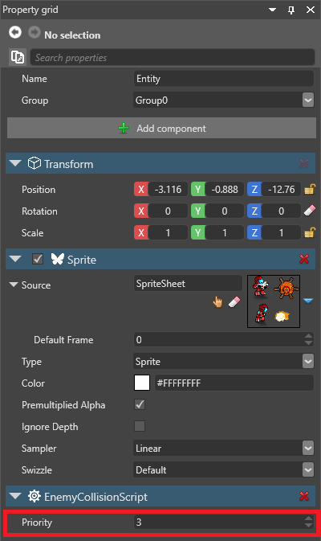

Scheduling and priorities
Warning
Приносим свои извинения за неудобства. Для этой страницы нет перевода на русский язык. Она будет отображаться на английском языке.
Beginner Programmer
Stride doesn't run scripts simultaneously; they run one at a time. Where scripts depend on each other, you should make sure they run in the correct order by giving them priorities.
Priorities apply to all kinds of scripts. This means that, for example, synchronous and asynchronous scripts don't have separate priority lists. They both join the same queue.
Scripts with lower priority numbers have higher priorities. For example, a script with priority 1 runs before a script with priority 2, and a script with priority -1 runs before a script with priority 1. By default, scripts have a priority of 0.
If scripts have the same priority, the order in which Stride runs them isn't deterministic. You might give scripts the same priority if you don't care which order they run in.
Note
Currently, there's no way to see a list of priorities in one place. You have to set each priority of each script individually in the script component properties.
Set a script priority
Priorities aren't set in the scripts themselves. Instead, they're set in the script component properties on the entity the script is attached to.
Attach the script to an entity. For information about how to do this, see Use a script.
With the entity selected, in the Property Grid, under the script component properties, set the Priority you want the script to have.
